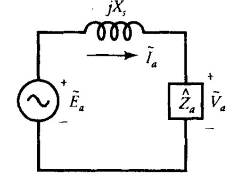
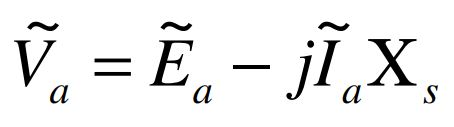
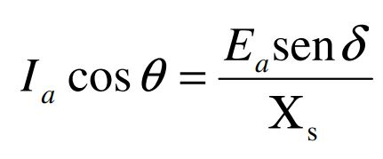
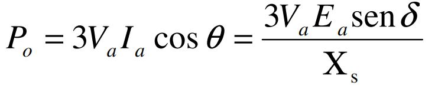

Inicialmente se tiene el siguiente Circuito equivalente para el generador sincronico:

Donde se encuentran las siguientes ecuaciones
  Al variar los parámetros de excitación del circuito se modifican las variables involucradas, es decir,
la corriente en el generador y el ángulo entre las tensiones.